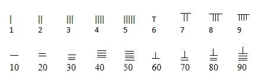

Matematica chineză timpurie diferă substanţial de cea din alte părţi ale lumii şi
în consecinţă a cunoscut o dezvoltare independentă.
Chinezii au dezvoltat independent un sistem de numere reale care include numere semnificativ mari și negative , mai mult de un
sistem numeric, algebră, geometrie , teoria numerelor și trigonometrie.
Sistemul de numerație simplificat:

Reprezentative în ceea ce privește modul de calcul sunt abacul și metoda de înmulțire chinezească.
Abacul chinezesc este o tehnică de calcul și de aritmetică mintală, prin care copiii învață să calculeze rapid chiar de la vârste
foarte fragede. Chiar de la 4-5 ani ei pot învăța să facă calcule cu milioane, cu sute de milioane într-un timp record.
Inmulțirea chinezească este o metodă foarte ingenioasă în care se foloseşte o metodă grafică cu linii.
Procedeul, la prima vedere, pare ciudat, inexplicabil. Dacă analizăm însă puţin, se observă că este o
înmulţire obişnuită. Important aici este să urmăm corect pașii pentru a ajunge la rezultatul corect.